How I used Claude Code, our design system and GitHub to move from requirements to working product experiences.
While working on newer BAIS experiences — including a candidate-facing ATS rebuild — our design process moved beyond static screens. Instead of designing the full experience in Figma and handing it over, AI-assisted coding became part of the design process itself.
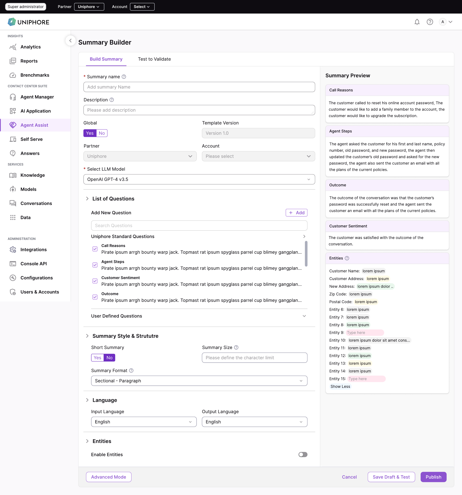
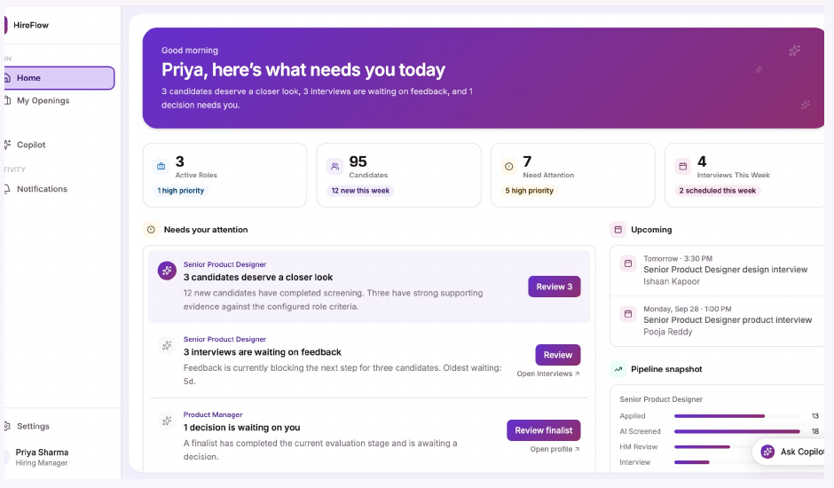
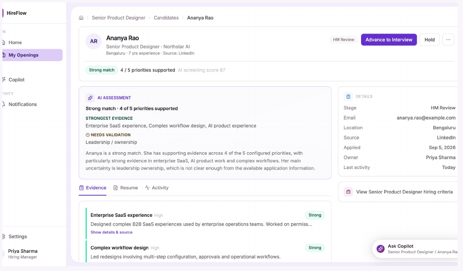
The shift
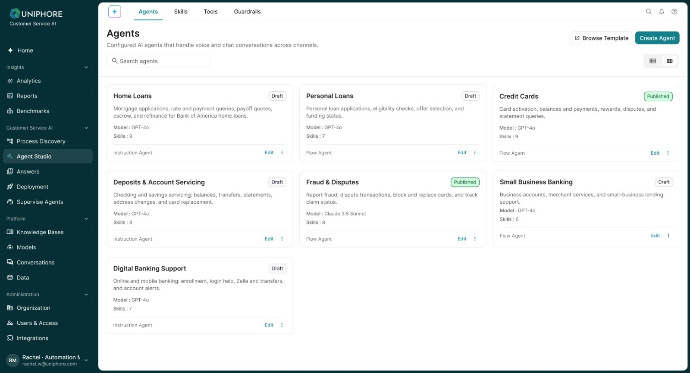
Moving from reviewing an intended experience to interacting with a functioning one — not Agents becoming the ATS, a shift in design medium.
Where it started
Before starting a new experience, we first structured the product and UX requirements — for larger projects, a tailored UX requirements document (a UXRD) describing the experience we were trying to create.
A UXRD could include product context, users and personas, the jobs they need to accomplish, key journeys, requirements, important states, constraints and expected behaviour.
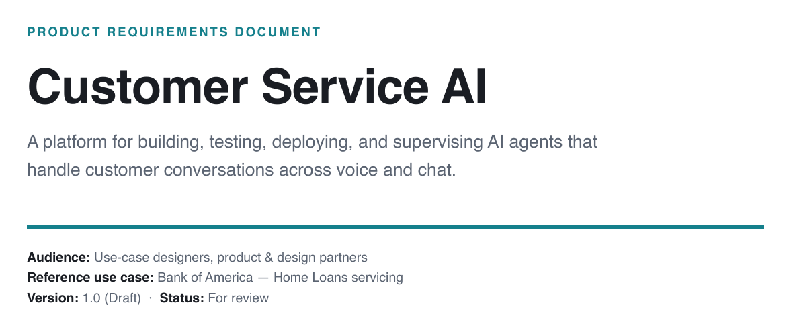
“AI accelerated the execution.
It didn't replace the product thinking.”
Design system as context
Generating an interface with AI is easy. Generating something that actually belongs inside an existing enterprise product is much harder. We already had an established design system with reusable components in Storybook, connected to our codebase — so Claude could work with the patterns that already existed instead of inventing new ones.
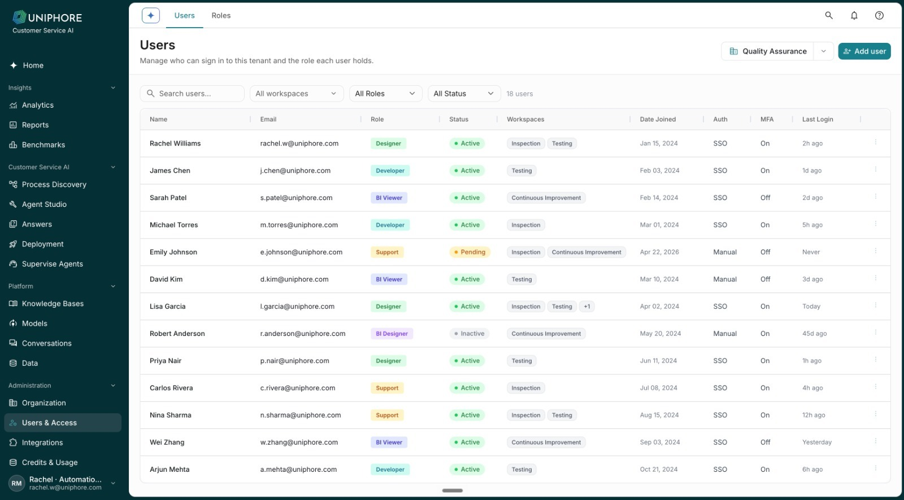
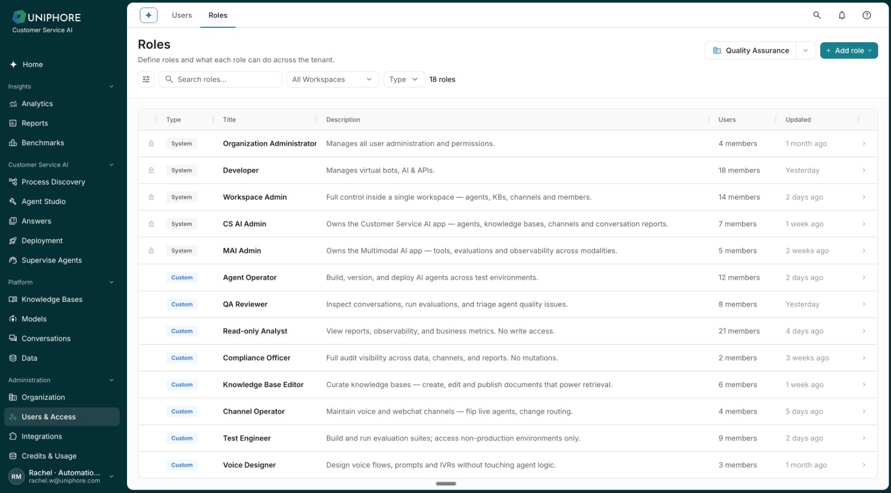
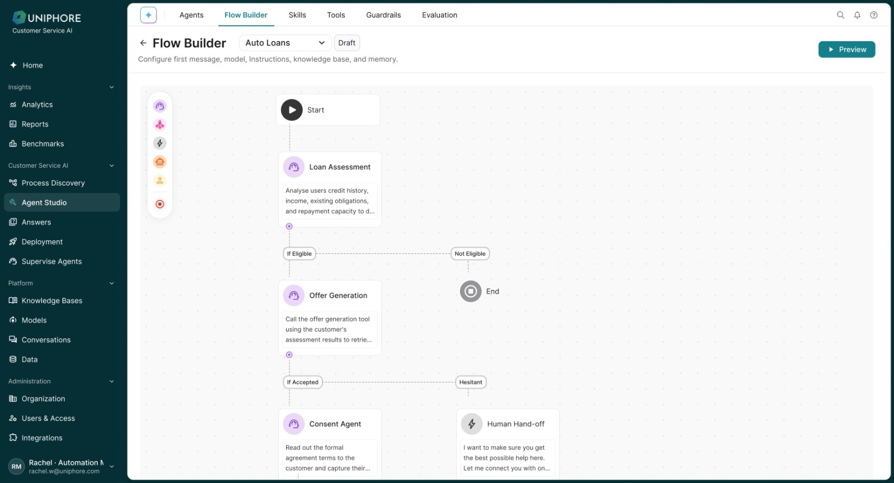
Three different workflows — user access, role governance, conversational flow logic. Same tables, same cards, same navigation language.
“The design system became context for the AI.”
Real project
Most applicant tracking systems treat every new candidate as inventory to clear. For a hiring manager running several open roles at once, that queue hides the one decision that actually needs them today. I rebuilt the experience around attention instead of inventory — designed, built and used end to end with Claude Code.
The transformation
The destination was never a generated screen. It was a working experience I could actually open, use and evaluate like a real product.
The functional experience became another design surface.
Division of labour
From idea to something I could use. Claude turned a structured brief into a running interface fast enough that I was interacting with it the same day, not reviewing it a sprint later.
Working software isn't necessarily good UX. Whether a recommendation felt trustworthy, where control had to stay explicit, what counted as enough evidence — those calls stayed mine.
Design moments
Using the working experience surfaced product decisions that are hard to see in a static screen. Five of them, below.
Instead of treating new applicants as inventory, the experience surfaces what deserves attention today and explains why — three candidates with strong evidence, three interviews blocking the next step, one decision waiting on a finalist.
AI recommendations needed to stay inspectable and challengeable rather than becoming an unexplained score — so a “strong match” verdict is backed by per-criterion evidence, sourced and ready to validate.
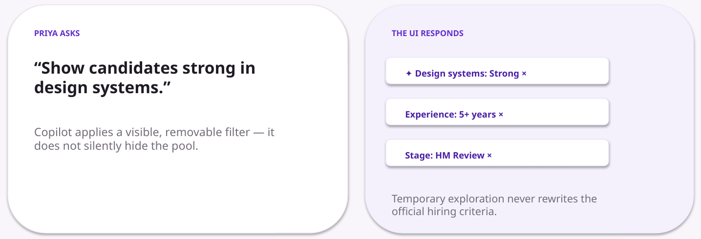
Natural-language exploration shouldn't silently change the system. The UI exposes the resulting filters so the person stays in control of what changed.
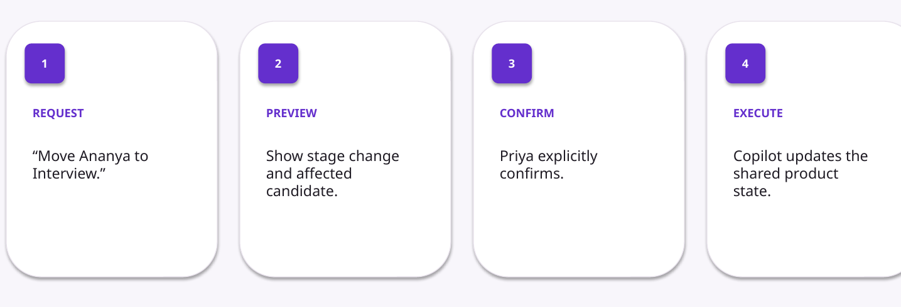
Claude can interpret and prepare an action, but a consequential one stays visible and deliberate — previewed, then explicitly confirmed.
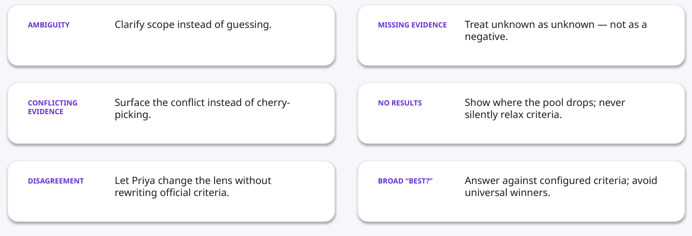
Scope, confidence and grounding had to be designed explicitly — what to do with ambiguity, missing evidence, or a disagreement with Priya's own read.
Figma's role
The workflow wasn't “Figma vs. Claude.” We used whichever surface helped us make the next design decision fastest.
“Figma and code became two surfaces of the same design process.”
Feedback loop
Once prototype screens were brought into Figma, the team could review them normally and leave comments. We created a workflow that allowed Claude to read the relevant Figma feedback — so feedback could move back into the implementation loop without manually translating every small comment into another long instruction.
Claude could help interpret and implement feedback, but I still reviewed the result and decided whether the change actually solved the UX problem — not every comment was automatically accepted and shipped.
“Automation shortened the feedback loop.
It didn't remove the designer from it.”
Working across GitHub
We maintained the work through GitHub. Designers could work through branches, push their latest changes, and let another designer or collaborator pull the current version and continue from there — so the prototype behaved more like a shared product artifact than a disposable one.
“The working prototype became collaborative and versioned.”
The full workflow
Repeat — this is a loop, not a one-way handoff.
Tools used along the way — secondary to the process itself:
What changed for me
Claude reduced the distance between an idea and something I could actually use. But deciding what to build, how the experience should behave, whether an AI-generated solution made sense, and when something needed manual design judgement still remained my responsibility.
Not a designer who makes Figma, hands it to engineering, and waits — but one who can understand, structure, design, build with AI, use, review, iterate and share. AI-generated output still needs human product and design judgement to become a real experience.